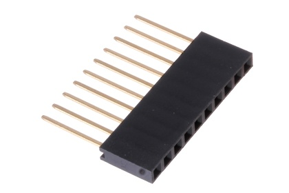

2.54 mm 10 Pin Female Header (Long) - HLF10

Summary
Name: 2.54 mm 10 Pin Female Header (Long)
ID: HELF-I01-X-10PI-01
Hex ID: HLF10
WebPage: https://github.com/oomlout/oomlout-OOMP/wiki/HELF-I01-X-10PI-01
Short URL: http://oom.lt/HLF10
Revision History: https://github.com/oomlout/oomlout-OOMP/blob/master/parts/HELF-I01-X-10PI-01/
| Type |
Size |
Color |
Description |
Index |
HELF
Female Header (Long) |
I01
2.54 mm |
X
|
10PI
10 Pin |
01
|
Images
About
This part is awaiting a description.
Specifications
| Info |
Value |
| Type |
Female Header (Long) |
| Size |
2.54 mm |
| Description |
10 Pin |
Extra Details
Page last updated: 2016-04-03 01:12
Spotted a mistake, want to add more? Let us know oomp@oomlout.com
All images and resources are licensed [CC BY-SA] unless otherwise stated (ie. the datasheets)